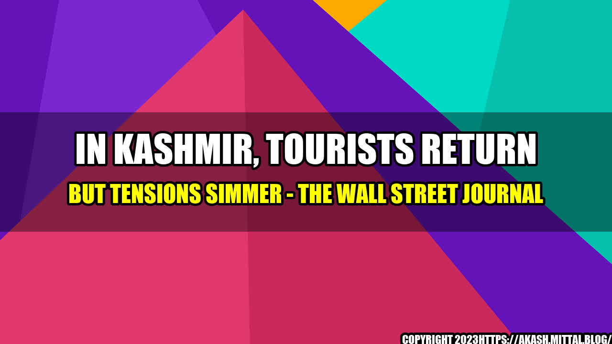

In Kashmir, Tourists Return but Tensions Simmer

Tourists have started to return to the picturesque valley of Kashmir, but tensions between India and Pakistan continue to simmer in the region.
In recent years, the disputed Himalayan territory has seen a surge in violence, with militants targeting Indian security forces and civilians in the predominantly Muslim area.
While the Indian government has tightened security measures to counter the insurgency, the situation remains volatile, with regular clashes between protesters and the authorities.
During a recent trip to the region, we met a group of tourists who had come to Kashmir to experience its natural beauty and culture.
One of them, a woman from Germany, told us that she was initially hesitant to visit the region due to the security concerns, but was eventually convinced by the positive feedback from other foreigners who had visited the area.
Despite some minor incidents, the group felt safe and enjoyed their stay in Kashmir, saying that they were impressed by the hospitality of the locals and the stunning landscapes.
- Tourism is a major industry in Kashmir, accounting for over 10% of the region's GDP.
- Since the easing of travel restrictions in 2011, there has been a steady increase in the number of tourists visiting the valley.
- According to official figures, over 600,000 tourists visited the region in 2019, up from around 400,000 in 2011.
- However, the ongoing tensions and occasional violence in the region have led to a decline in tourist arrivals in recent years.
An
Despite Tensions and Violence, Tourists Return to Kashmir
A
- Kashmir remains a beautiful and unique travel destination, with stunning natural landscapes and a rich cultural heritage.
- The region has seen a surge in violence in recent years, with regular clashes between militants and Indian security forces, as well as protests and curfews.
- Despite the security concerns, tourism is an important industry in Kashmir and many visitors continue to flock to the region, albeit in smaller numbers than in the past.
During our trip to Kashmir, we met a local guide who told us about his experiences working in the tourism industry in the region.
He explained that while there were certainly challenges and risks associated with his job, he felt a strong sense of pride and purpose in sharing his culture and his home with visitors from around the world.
He also spoke about the importance of responsible and sustainable tourism, and the need to balance economic growth with environmental and cultural preservation.
Practical Tips
- Before you travel to Kashmir, be sure to research the latest security situation and travel advisories.
- Choose a reputable travel agency or tour operator, and make sure they have experience and knowledge of the region.
- Be respectful of local customs and traditions, and dress appropriately.
- Practice eco-friendly tourism by minimizing your impact on the environment and supporting local conservation efforts.
References and Hashtags
Reference urls:
- https://www.wsj.com/articles/in-kashmir-tourists-return-but-tensions-simmer-11585686900
- https://www.travelandleisure.com/travel-news/kashmir-tourism-economic-impact
- https://www.aljazeera.com/news/2019/08/young-climber-battling-restrictions-kashmir-tourism-190806161432837.html
Hashtags:
- #KashmirTourism
- #ExploreKashmir
- #SustainableTourism
- #ResponsibleTravel
Article Category: Travel and Tourism
Curated by Team Akash.Mittal.Blog
Share on Twitter Share on LinkedIn